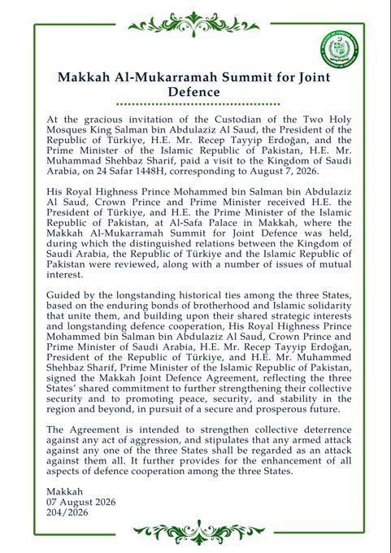

@CMShehbaz
📝 原文: Honoured to sign the Makkah Joint Defence Agreement alongside my dear brothers, HRH Crown Prince Mohammed bin Salman and H.E. President Recep Tayyip Erdoğan.
Three brotherly nations, united by faith, friendship and a shared resolve for peace and security.
May this historic
🇨🇳 译文: 很荣幸与我亲爱的兄弟王储穆罕默德·本·萨勒曼殿下和穆罕默德·本·萨勒曼殿下一起签署《麦加联合防御协议》总统雷杰普·塔伊普·埃尔多安。
三个兄弟国家因信仰、友谊和对和平与安全的共同决心而团结在一起。
愿这个历史性的



🕒 2026-08-07T15:17:05+00:00